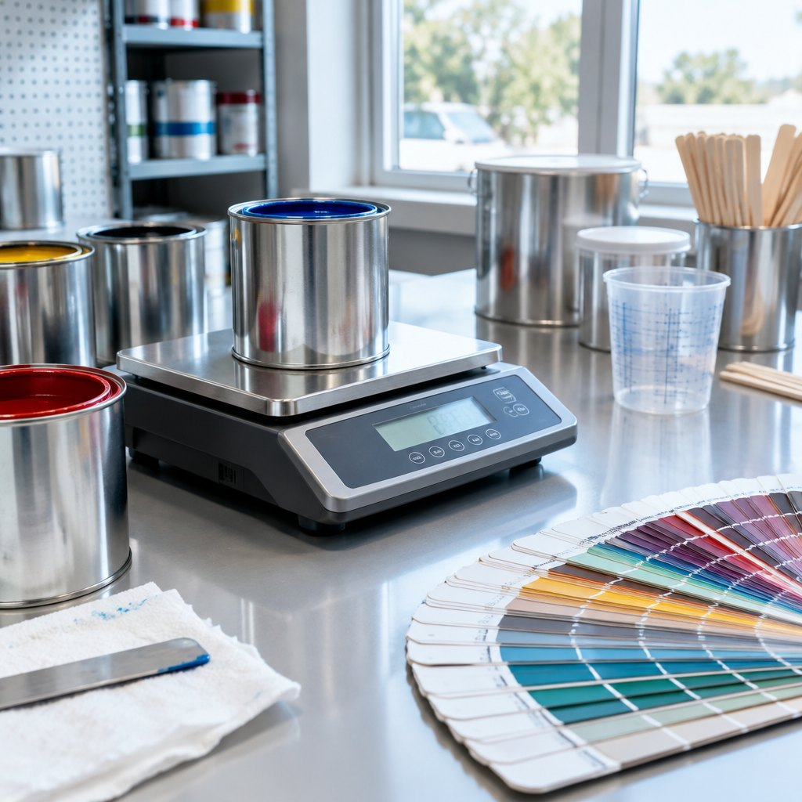

Попадание в цвет — это работа, а не везение
Подбираем по коду, по VIN и по образцу с детали. Учитываем выгорание: у автомобилей старше пяти лет цвет по коду почти всегда отличается от фактического.
Три способа попасть в цвет
Чем точнее исходные данные, тем меньше переходов и тем незаметнее ремонт.
По коду краски
Код с заводской таблички. База: точный рецепт, но без поправки на выгорание.
По VIN
Уточняем заводской оттенок и вариант исполнения: у многих марок один код имеет несколько вариантов.
По образцу
Снимаем лючок или небольшой элемент и подбираем по факту: самый точный способ для автомобилей с пробегом.
Типы покрытий
От типа покрытия зависит не только вид, но и технология нанесения и ухода.
Акрил
Однослойный или двухслойный: проще в ремонте, дешевле, но менее «глубокий» по виду.
Металлик
База с алюминиевой «искрой» и лак сверху. Требует равномерности нанесения, иначе видны полосы.
Перламутр
Многослойный: цвет меняется под углом. Самое сложное попадание, требует контрольного выкраса.
Матовый
Матовый лак: без глянца, требует деликатного ухода и не полируется абразивом.
Трёхслойный
База + промежуточный слой + лак. Например, белый перламутр или красный «кэнди».
Как проверяем совпадение
Прежде чем красить элемент целиком, делаем контрольный выкрас и сравниваем при разном свете.
Порядок контроля
Приготовили краску → нанесли выкрас на пробную пластину → сравнили с деталью при дневном свете и в камере → при необходимости скорректировали → только потом окрас элемента.
Почему это важно
Металлик и перламутр «играют» под углом: оттенок, идеальный спереди, может отличаться сбоку. Контрольный выкрас показывает это до окраса, а не после.
Когда нужен переход
Если красится часть детали или соседний элемент сильно выгорел, делаем плавный переход в цвет.
Окрас элемента целиком
Лучший вариант: границы по кромкам, цвет однороден, переходы не нужны.
Переход на соседнюю деталь
Применяем, когда оттенок отличается: база «размывается» по площади и закрывается лаком.
Без перехода
Допустимо на новых автомобилях и на деталях, не контактирующих по площади с окрашенными.
Про цвет
Самые частые вопросы о совпадении цвета.
Краска выгорает и меняет оттенок под ультрафиолетом. Код даёт заводской цвет, а не фактический — поэтому нужен образец.
Фото помогает оценить работу, но для цвета не годится: камера телефона искажает оттенок. Нужен код или образец.
Пробная пластина с нанесённой краской, которую сравнивают с деталью до окраса.
Да, абразивная полировка убирает матовость. Для матовых покрытий нужен специальный уход.
Да, если есть образец или рецепт. Подберём и покажем выкрас до начала работ.
Не уверены в оттенке?
Привезите лючок или код краски — подберём и покажем выкрас.